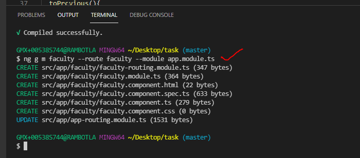
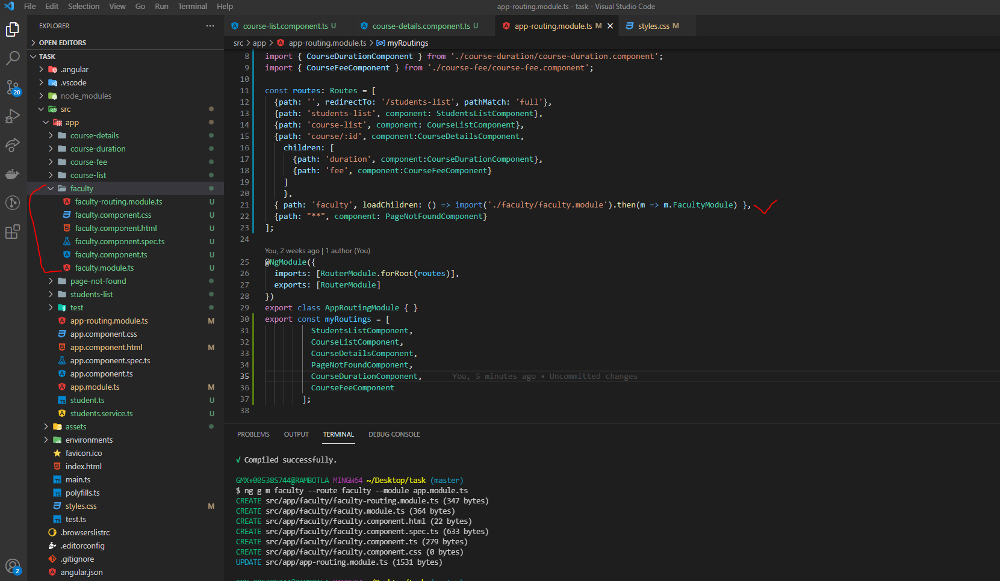
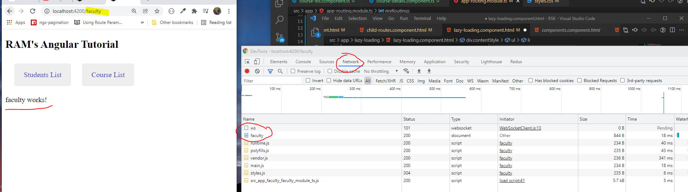

CHILD ROUTES
- In Angular by default, Modules are eagerly loaded. Means, as soon as the app is loaded all modules are loaded without checking whether they are immediately required to not?
- Lazy Loading is a design pattern that loads required modules only.
- Lazy loading helps to keep the initial bundle size smaller, which helps to decrease the load time and increase the performance.
- In practical most of the applications are made-up with a large number of modules.
- EX:- In a shopping mart application, we may use modules like,
- Users Module:-
- User Login (Component)
- Forgot Password (Component)
- User profile (Component)
- Update user profile (Component)
- Items Module
- Order Module
- Inventory Module
- Load modules when they are required. that means, when user logged in and when he navigate only, orders and history of orders are visible.
Two steps to create a Lazy loading feature:-
-
- Create a feature module.
- Configure load Children in appRouting
- Previously, we need to write the code for LAZY Loading but from angular 8 onwards it run the automatically by running the below command .
- SYNTAX:
ng g m faculty --route faculty --module app.module.ts

- It is creating the Faculty component along with faculty-routing-module.ts(routing ) file ,faculty.module.ts(module )file and it is creating the Lazy loading and updated into app.routing.module.ts file.

- When i run the application at that time Faculty component not run the initial application load time. whenever user try to navigate or click to access the Faculty component at that time only it run and display the Output.
